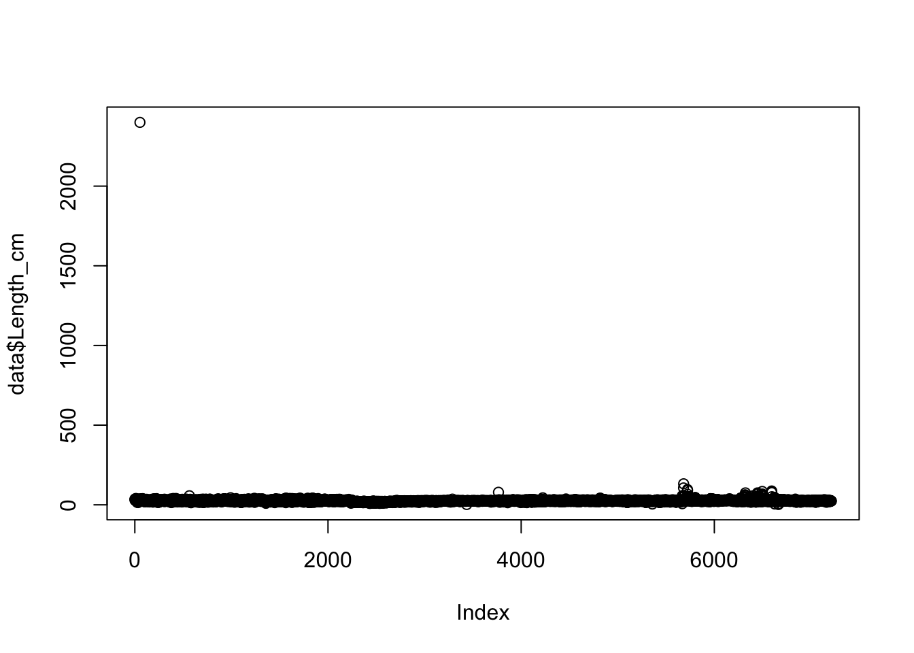
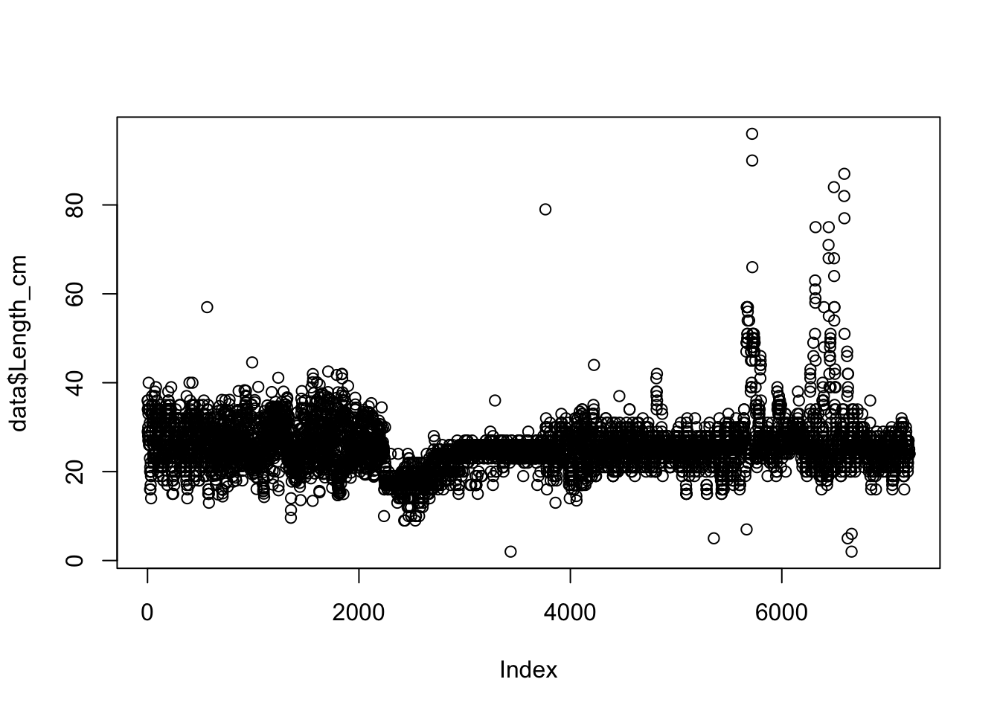

6 Data Cleaning (QA/QC)
Screening and cleaning your data to identify and fix any potential errors (missing data, typos, errors, etc.) is an important step before conducting any analyses. This is known as Quality Assurance/Quality Control, or QA/QC. This section includes an overview of steps that should be taken to properly screen your data and introduces some functions that can come in handy when cleaning your data. If you have a small dataset that won’t be updated often, screening and cleaning your data may be easiest in Microsoft Excel by sorting and filtering your data columns. However, we recommend performing your data cleaning using R. This has the advantage that all changes made to a raw dataset will be recorded in a script that is reproducible, which may be especially useful when working with large datasets, if you want to quickly modify any steps of your cleaning process, or if you receive additional data.
6.1 Data structure
First, let’s read a dataset into R and determine the structure of the dataset. We can look at the raw data just by typing data.
data <- read_csv("_data/sample_landings_data_raw.csv")
data## # A tibble: 7,214 × 8
## yy dat trip effort gr sp l_cm w_cm
## <int> <chr> <int> <int> <chr> <chr> <dbl> <dbl>
## 1 2003 4/30/03 1 10 Trap Caesoi cunning 36 1089.1402
## 2 2003 4/30/03 1 10 trap Caesio cuning 29 565.3879
## 3 2003 4/30/03 1 10 Trap Caesio cuning 34 915.8276
## 4 2003 4/30/03 1 10 Trap Caesio cuning 36 1089.1402
## 5 2003 4/30/03 1 10 Trap Caesio cuning 34 915.8276
## 6 2003 4/30/03 1 10 Trap Caesoi cunning 28 508.3185
## 7 2003 4/30/03 1 10 Trap Caesio cuning 30 626.6000
## 8 2003 4/30/03 1 10 Trap Caesio cuning 27 455.2443
## 9 2003 4/30/03 1 10 Trap Caesio cuning 33 836.5681
## 10 2003 4/30/03 1 10 Trap Caesio cuning 35 999.9688
## # ... with 7,204 more rowsYou’ll first notice that R calls this data frame a tibble, which is just another word for a nice clean version of a data frame. This format is automatically used when you read in data using read_csv, which we always recommend. We can see that there are [7214] observations (rows) in our data frame and [8] variables (columns). First, let’s give our columns more descriptive column headings. We can rename columns using the rename function from the dplyr package.
data <- data %>%
rename(Year = yy,
Date = dat,
Trip_ID = trip,
Effort_Hours = effort,
Gear = gr,
Species = sp,
Length_cm = l_cm,
Weight_g = w_cm)
data## # A tibble: 7,214 × 8
## Year Date Trip_ID Effort_Hours Gear Species Length_cm
## <int> <chr> <int> <int> <chr> <chr> <dbl>
## 1 2003 4/30/03 1 10 Trap Caesoi cunning 36
## 2 2003 4/30/03 1 10 trap Caesio cuning 29
## 3 2003 4/30/03 1 10 Trap Caesio cuning 34
## 4 2003 4/30/03 1 10 Trap Caesio cuning 36
## 5 2003 4/30/03 1 10 Trap Caesio cuning 34
## 6 2003 4/30/03 1 10 Trap Caesoi cunning 28
## 7 2003 4/30/03 1 10 Trap Caesio cuning 30
## 8 2003 4/30/03 1 10 Trap Caesio cuning 27
## 9 2003 4/30/03 1 10 Trap Caesio cuning 33
## 10 2003 4/30/03 1 10 Trap Caesio cuning 35
## # ... with 7,204 more rows, and 1 more variables: Weight_g <dbl>We can see that the variables containing numbers are in the integer (int) or numeric (num) class. The variables containing characters are classified as factors. Although the variable Year is numeric, we will to treat it as a factor, and not a continuous variable. For any future analyses, we will now be able to perform calculations on integer and numeric class variables across the Year variable. Similarly, we will want to convert the Date variable to a date format.
data <- data %>%
mutate(Date = mdy(Date)) %>%
mutate(Year = factor(Year))
class(data$Year)## [1] "factor"class(data$Date)## [1] "Date"6.2 Missing values
Next, let’s check our data frame to determine if there are any missing values by subsetting observations (rows) in our dataframe that have missing values using the complete_cases function and the logical operator for negation, ! .
data[!complete.cases(data),]## # A tibble: 3 × 8
## Year Date Trip_ID Effort_Hours Gear Species Length_cm
## <fctr> <date> <int> <int> <chr> <chr> <dbl>
## 1 2003 2003-05-01 10 10 <NA> Caesio cuning 19.000
## 2 2003 2003-05-01 10 10 Handline Caesio cuning 19.000
## 3 2004 2004-12-18 NA 9 Trap Caesio cuning 20.104
## # ... with 1 more variables: Weight_g <dbl>There are 3 rows in our dataframe with missing values. If we want to remove observations with missing data from our dataset we can use the na.omit function which will remove any rows with missing values from our dataset:
data <- na.omit(data)
data## # A tibble: 7,211 × 8
## Year Date Trip_ID Effort_Hours Gear Species Length_cm
## <fctr> <date> <int> <int> <chr> <chr> <dbl>
## 1 2003 2003-04-30 1 10 Trap Caesoi cunning 36
## 2 2003 2003-04-30 1 10 trap Caesio cuning 29
## 3 2003 2003-04-30 1 10 Trap Caesio cuning 34
## 4 2003 2003-04-30 1 10 Trap Caesio cuning 36
## 5 2003 2003-04-30 1 10 Trap Caesio cuning 34
## 6 2003 2003-04-30 1 10 Trap Caesoi cunning 28
## 7 2003 2003-04-30 1 10 Trap Caesio cuning 30
## 8 2003 2003-04-30 1 10 Trap Caesio cuning 27
## 9 2003 2003-04-30 1 10 Trap Caesio cuning 33
## 10 2003 2003-04-30 1 10 Trap Caesio cuning 35
## # ... with 7,201 more rows, and 1 more variables: Weight_g <dbl>Checking the data structure again, we can see that the 3 rows containing NA values have been removed from our dataframe. You may not always wish to remove NA values from a dataset, if you still want to keep other values in that observation. Even if you want to keep observations with NA values in the dataset, it is still good to identify NAs and know where they occur to ensure they don’t create problems during analyses.
6.3 Typos
We can check for typos in our factor variables by using the unique function, which will tell us all of the unique values found within each factor. As an example, let’s look at the Gear variable.
unique(data$Gear)## [1] "Trap" "trap" "Muroami" "Handline" "Gillnet" "Trolling"
## [7] "Speargun"The gear variable has 7 unique values, however, we know there should only be 6 gears present in the dataset. We can see that “trap” appears twice because capitalization was inconsistent. The lower case ‘t’ causes R to read it as a unique value and its own factor level. We can fix this by making sure all of our values in the Gear variable are consistent and have all lowercase letters using the tolower function. Alternatively, we could change them to all uppercase using the toupperfunction. To make sure we don’t change the class of the variable we also use the as.factor function. Similarly to Year, this will allow us to do later analyses across the Gear column.
data <- data %>%
mutate(Gear = tolower(Gear)) %>%
mutate(Gear = as.factor(Gear))
unique(data$Gear)## [1] trap muroami handline gillnet trolling speargun
## Levels: gillnet handline muroami speargun trap trollingNow we have the correct number (6) of unique gears in our dataset.
Now, let’s check another our Species variable for typos:
unique(data$Species)## [1] "Caesoi cunning" "Caesio cuning"The species is showing 2 unique values, but we know there should only be one species in our dataset. It appears there is a spelling error on one of our species names. We can check how many times each of the 2 species spellings occurs in our dataset by using the nrow function on a filtered subset of data for each of the two Species values:
data %>%
filter(Species == "Caesoi cunning") %>%
nrow()## [1] 2data %>%
filter(Species == "Caesio cuning") %>%
nrow()## [1] 7209It looks like “Caesoi cunning” likely the typo because it only appears once in our dataset, while “Caesoi cunning” appears (7209) times. We can fix this by replacing the misspelled Species value and replacing it with the value that is spelled correctly. We do this using mutate and replace:
data <- data %>%
mutate(Species = replace(Species,Species == "Caesoi cunning", "Caesio cuning")) %>%
mutate(Species = as.factor(Species))
unique(data$Species)## [1] Caesio cuning
## Levels: Caesio cuningNow we have only one species value in our Species variable in our dataset, which is correct. The unique values of all categorical columns (i.e., gear type, species name, etc) should be examined during the data screening and cleaning process.
6.4 Errors
Errors in numeric/integer values may be caused from typos during data entry or from an error during the data collection process (for example, maybe the scale was broken or not zeroed out before weighing). To look at the range and distribution of a numeric variable, the summary function can be used.
summary(data$Length_cm)## Min. 1st Qu. Median Mean 3rd Qu. Max.
## 2.00 23.00 25.00 25.81 27.00 2400.00Looks like we have a max Length_cm value that is order of magnitude higher than the mean and median values. Visualizing numeric data is another great way to screen continuous data and identify data outlines that may be caused from errors in the dataset:
plot(data$Length_cm) We can clearly see there is an outlier in our data (upper left corner of the plot). We are not sure how this error occurred, but we know that this is not correct. In fact, we know that the maximum possible size of our species 100 cm. We know that a measurement or typo error must have occurred for any Length_cm values that are over 100 cm We can remove these erroneous data by only including observations in our dataset with values over 100 cm (species maximum size) using the filter function:
data <- data %>%
filter(Length_cm < 100)
plot(data$Length_cm) Now all of our data contains accurate length observations that are in the range of our species length. This process of plotting and examining should be conducted for each of our numeric variables before conducting any analyses to identify any outliers and to remove any erroneous data.
6.5 Saving clean data
Now that we have completed our data cleaning and screening, let’s examine the structure of our data frame again:
data## # A tibble: 7,208 × 8
## Year Date Trip_ID Effort_Hours Gear Species Length_cm
## <fctr> <date> <int> <int> <fctr> <fctr> <dbl>
## 1 2003 2003-04-30 1 10 trap Caesio cuning 36
## 2 2003 2003-04-30 1 10 trap Caesio cuning 29
## 3 2003 2003-04-30 1 10 trap Caesio cuning 34
## 4 2003 2003-04-30 1 10 trap Caesio cuning 36
## 5 2003 2003-04-30 1 10 trap Caesio cuning 34
## 6 2003 2003-04-30 1 10 trap Caesio cuning 28
## 7 2003 2003-04-30 1 10 trap Caesio cuning 30
## 8 2003 2003-04-30 1 10 trap Caesio cuning 27
## 9 2003 2003-04-30 1 10 trap Caesio cuning 33
## 10 2003 2003-04-30 1 10 trap Caesio cuning 35
## # ... with 7,198 more rows, and 1 more variables: Weight_g <dbl>We now have [7208] observations, with [8] variables, and with each variable being the correct data type. We can compare this to our raw dataset and see that we removed 6 observations (3 observations had missing values and 3 had error). This script may come in handy if, for example, we realize that the maximum size of our species is actually 200 cm (not 100 cm). We will know that our dataset does not include any length observations over 100 cm because we have documented our cleaning process and can easily go back to this script and change the 100 to a 200 and rerun this script. If we receive more data, we can also simply re-run this script, and all data cleaning steps will be performed again automatically.
We can save this dataset using a new name so that we have a copy of both the raw, and clean data. Now, we are ready to summarize and analyze our clean dataset.
write_csv(data,"_data/sample_landings_data_clean.csv")